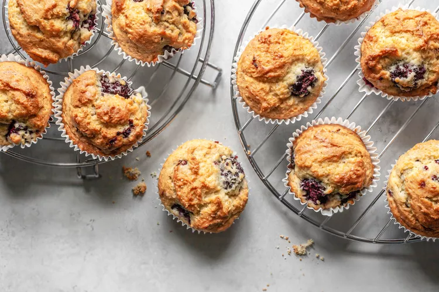

Blackberry Muffins Recipe

Description
Bake a batch of the rich, tender, delicious blackberry muffins!
This muffin recipe, filled with juicy blackberries, is a family favorite.
Ingredients
- 2 1/2 cups (320g) all-purpose flour
- 1 tablespoon baking powder
- 1/2 teaspoon baking soda
- 1/2 teaspoon salt
- 1/2 teaspoon cinnamon
- 1 cup (200g) sugar
- 2 large eggs
- 1 cup (236ml) sour cream
- 8 tablespoons (1 stick, 112g) warm melted unsalted butter
- 1 teaspoon milk or water
- 1 teaspoon vanilla
- 2 cups (300g) fresh blackberries, halved
Steps
- Preheat the oven and prepare the pans
- Combine the dry ingredients
- Combine the sugar and wet ingredients
- Mix the batter and add the berries
- Divide the batter and bake
- Cool and serve